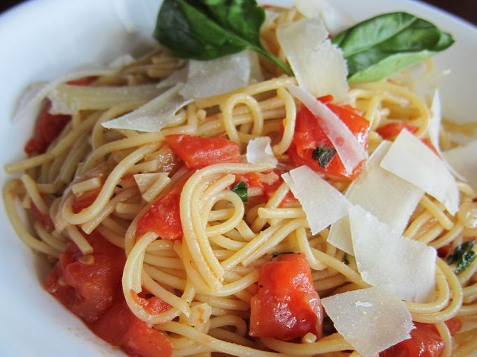

Pasta Pomodoro Recipe:

Ingredients:
- 1 (16 ounce) package angel hair pasta
- ¼ cup olive oil
- ½ onion, chopped
- 4 cloves garlic, minced
- 2 cups roma (plum) tomatoes, diced
- 2 tablespoons balsamic vinegar
- 1 (10.75 ounce) can low-sodium chicken broth
- crushed red pepper to taste
- freshly ground black pepper to taste
- 2 tablespoons chopped fresh basil
- ¼ cup grated Parmesan cheese
Directions:
- Bring a large pot of lightly salted water to a boil. Add pasta and cook for 8
minutes or until al dente; drain.
- Pour olive oil in a large deep skillet over high-heat. Saute onions and garlic until
lightly browned. Reduce heat to medium-high and add tomatoes, vinegar and chicken broth;
simmer for about 8 minutes.
- Stir in red pepper, black pepper, basil and cooked pasta, tossing thoroughly with
sauce. Simmer for about 5 more minutes and serve topped with grated cheese.